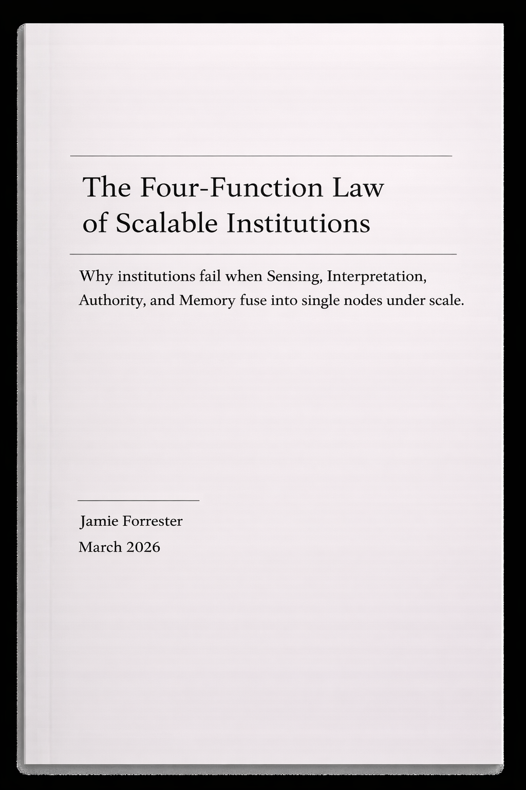

Structural diagnosis and redesign for systems that keep failing under scale.
I make hidden rules visible, define the actual line of failure, and produce written artifacts that decision owners and builders can act against.
The output is not vague advice. It is a fixed-scope document: either a Diagnostic Artifact that makes the failure legible, or a Redesign Artifact that defines the change sequence.
If the same failure has happened twice, the structure is probably the problem.
- What this is →
- Two fixed-scope written engagements: one to diagnose the failure, one to define the redesign path.
- What it solves →
- Recurring failure caused by hidden structure in interfaces, incentives, ownership, or enforcement.
- Who it is for →
- Founders, CTOs, and product or platform leads who need a structural read their builders can execute against.
- How to start →
- Email five lines plus any relevant materials you already have.
Why failure repeats.
Most repeated failure is not a motivation problem or a communication problem. It is a structural problem. The visible issue changes names. The underlying rule, interface, or enforcement failure does not.
- Alignment cycles that produce shared language but no structural change
- Policy surfaces that describe intent without changing operating reality
- Roadmaps that move work around without removing the underlying failure
- The same failure keeps returning under different names
- Your operators are absorbing failures the system should absorb
- Your platform signals one thing and optimises another
- The real unit of failure becomes visible
- The decision surface becomes clearer
- Builders stop inventing the design while implementing it
Start with the artifact that matches the state of the problem.
Two fixed-scope written engagements. Start with diagnosis when the failure is still structurally unclear. Move to redesign when the failure is visible but the transition path is not.
A structural diagnosis your team can circulate and act against.
Start here when something keeps breaking but the real failure is not yet visible. Use it to make the real rules visible before builders move.
When to use this: The same failure keeps reappearing. Teams disagree on what the problem actually is. Policy and reality have drifted apart. No one has a single structural read everyone can act against.
- System topology: where work actually flows
- Primitive definition: the real unit of work
- Invariants: rules that must not break
- Enforcement map: where rules live vs where they break
- Mismatch analysis: stated design vs operating reality
- Build map: what must change first, and what depends on what
A redesign blueprint builders can execute with confidence.
Start here when the failure is visible but the change sequence is not. Use it to define what changes first, what stays fixed, and how regression is blocked.
When to use this: The failure is understood but the transition path is not. Builders are being forced to invent design midstream. Implementation keeps drifting back to the same broken state.
- Target boundary spec: what changes and what does not
- Transition sequence: Step 1 → N
- Interface changes: what must be tightened, removed, or clarified
- Dependency order: what moves first, and what depends on what
- Drift refusal gates: constraints that prevent regression
- Execution handoff: a builder-readable sequence for implementation
The work is grounded in a defined lens, not assembled on demand. The same structural logic used in client engagements appears in published research, public system analysis, and a fixed commercial model.

The Four-Function Law of Scalable Institutions
Why institutions fail when sensing, interpretation, authority, and memory collapse into the same human node under scale.
Observed: reliability language used as a proxy for expertise.
Mismatch: throughput is measured; expertise is implied.
Consequence: optimisers outcompete experts under scale.
Structural move: separate verification layers from payout layers.
Trust signal
Fixed-scope written engagements. Not open-ended advisory drift.
Trust signal
Transparent pricing. The entry engagement is explicitly priced.
Trust signal
Builder-readable output. The artifact is written to support decisions and execution.
Trust signal
Fit gate. If neither engagement is the right fit, I will say so.
Further depth
Research page. Books, papers, and frameworks sit behind the practice, but they do not slow the homepage decision path.
If your system keeps failing in the same way under growth, send the failure pattern first. I review fit and determine whether the work should begin with diagnosis or move directly to redesign.
Send the brief. Five lines plus any relevant material you already have.
I review fit. Diagnosis if the structure is still unclear; redesign if the failure is already visible.
You receive the artifact. One written document built for decision-making and builder execution.
- The Pattern: What keeps breaking?
- The Stake: What is the cost?
- The Interfaces: Who or what is touching the failure?
- Concentration: Where is the heat showing up?
- Constraints: What are the non-negotiables?
If neither engagement is the right fit, I will say so.